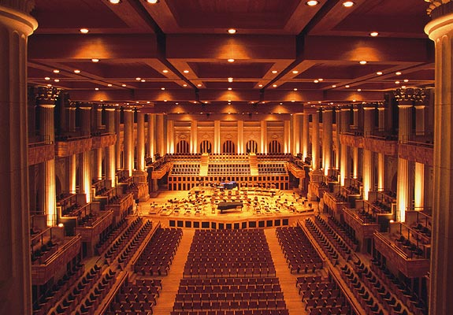
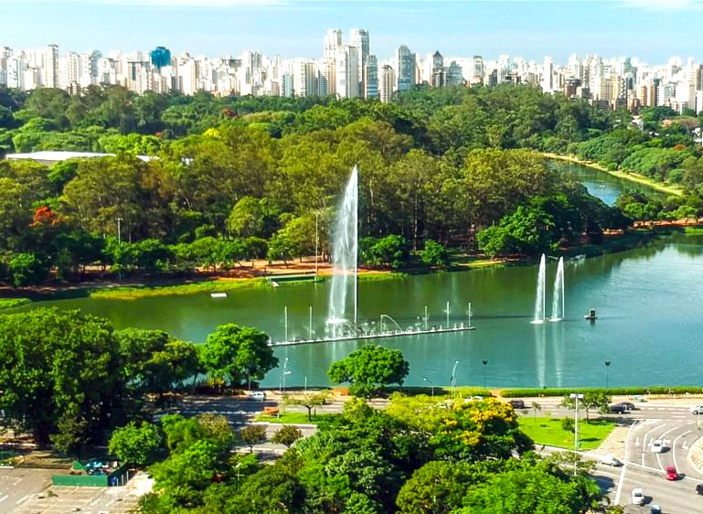
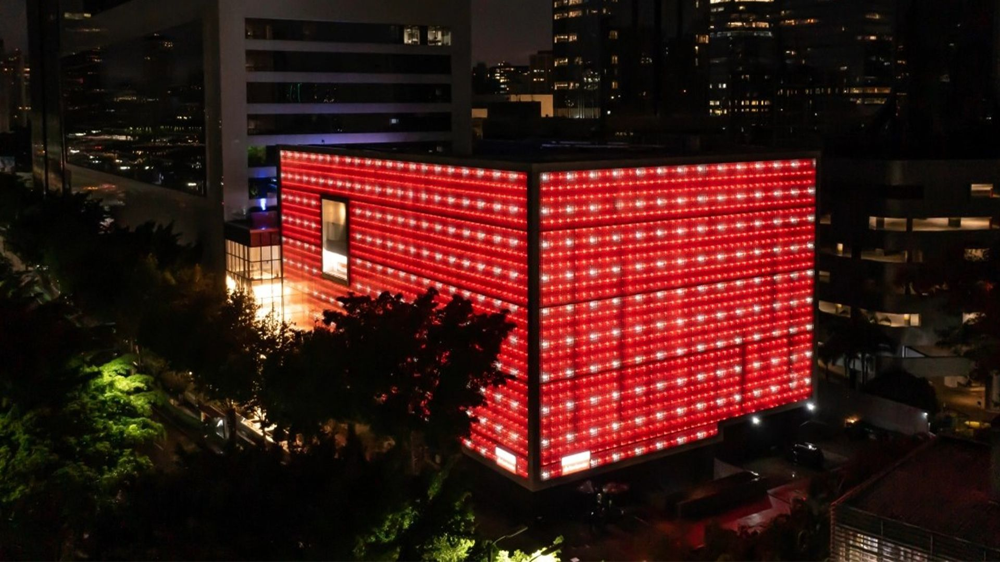

Onde Minhas Memórias Ganham Vida
Esses lugares não são apenas pontos turísticos, mas capítulos
da minha história que sempre quero revisitar.
| Imagem | Nome | Descrição | Como Chegar |
|---|---|---|---|
|  |
Sala São Paulo |
Localizada na antiga Estação Júlio Prestes, a Sala São Paulo
|
Sala São Paulo |
|  |
Parque Ibirapuera |
Um dos parques mais famosos de São Paulo, perfeito para caminhar,
|
Parque Ibirapuera |
|  |
Teatro Santander |
Um dos teatros mais modernos de São Paulo, conhecido por receber
|
Teatro Santander |